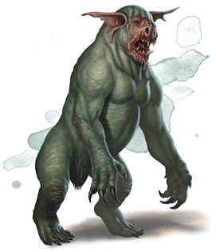

Dretch
Dretches are among the weakest of demons — repulsive, self-loathing creatures doomed to spend eternity in a state of perpetual discontent. Their low intelligence makes dretches unsuitable for anything but the simplest tasks. However, what they lack in potential, they make up for in sheer malice. Dretches mill about in mobs, voicing their displeasure as an unsettling din of hoots, snarls, and grunts.